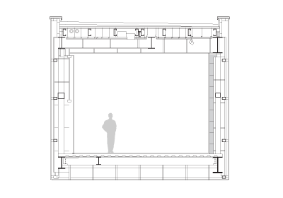
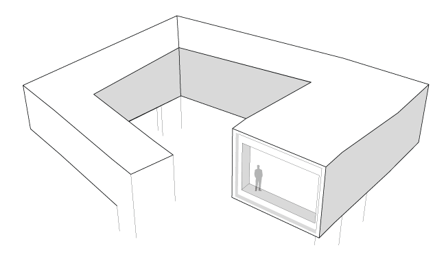
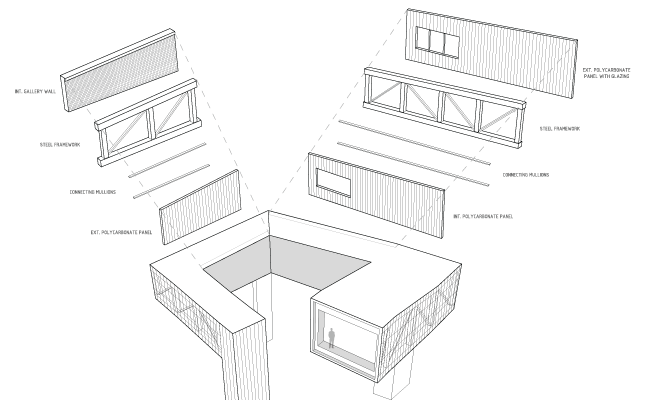
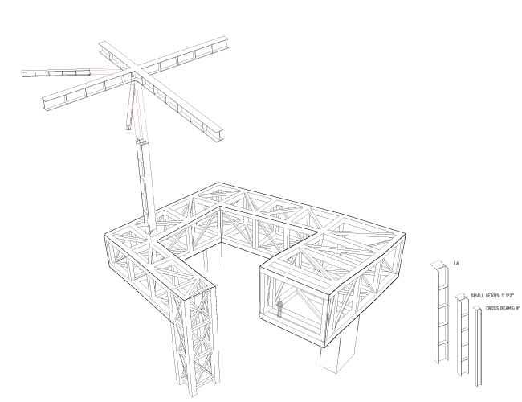
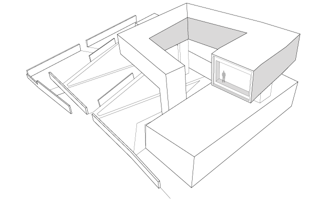
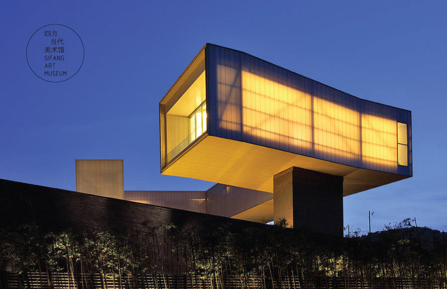

Nanjing Sifang Art Museum
A diagramming exercise
To kick off the semester, I was assigned a quick study in diagramming to get learn the best way to represent a work of architecture, telling a full story with as much pure imagery as possible.
Working in a team of three, we analyzed the Nanjing Sifang Art Museum. We learned that the design concept stemmed from traditional Chinese paintings that use parallel perspective, rather than using vanishing points or true perspective.
The intricate structure of the museum was equally fascinating, supported fully by three points of contact with the ground and a box truss that proved quite challenging to model digitally, as it gradually slopes in all directions.
    This lesson taught me how to fully immerse myself in the story behind a piece of architecture. I learned how to tell a story conceptually though linework alone. I also began to understand how the layers of any built structure come together and the structure doesn't have to be a hinderance; it can actually be hugely beneficial to the conceptual design.
